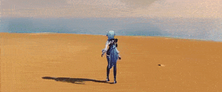
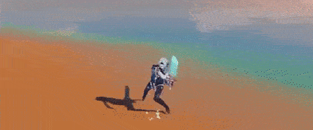

Favonius Bladework - Edel
Normal Attack
Perform up to five consecutive strikes.
Charged Attack
Drains Stamina over time to perform continuous slashes.
At the end of the sequence,
perform a
more powerful slash.
Plunging Attack
Plunges from mid-air to strike the ground, damaging
opponents along the path and dealing
AoE
DMG
upon impact.


Icetide Vortex
Press
Slashes swiftly, dealing Cryo DMG. When it hits an opponent,
Eula gains a stack of
Grimheart
that stacks up to two times.
These stats can only be gained once every 0.3s.
Grimheart Stack
Increases Eula's resistance to interruption and DEF.
Hold
Wielding her sword, Eula consumes all the stacks of Grimheart
and lashes forward, dealing AoE Cryo DMG to opponents in front of her.
If Grimheart stacks are consumed, surrounding opponents will have their
Physical RES and Cryo RES decreased.
Each consumed stack of Grimheart will be converted into an Icewhirl Brand
that deals Cryo DMG to nearby opponents.

Glacial Illumination
Brandishes her greatsword, dealing Cryo DMG to nearby opponents
and creating a Lightfall Sword that follows her around for a duration
of up to 7s.While present, the Lightfall Sword increases Eula's resistance
to interruption.
When Eula's own Normal Attack, Elemental Skill, and Elemental Burst deal DMG
to opponents, they will charge the Lightfall Sword, which can gain an energy
stack once every 0.1s.
Once its duration ends, the Lightfall Sword will descend and explode violently,
dealing Physical DMG to nearby opponents. This DMG scales on the number
of energy stacks the Lightfall Sword has accumulated. If Eula leaves the
field, the Lightfall Sword will immediately explode.